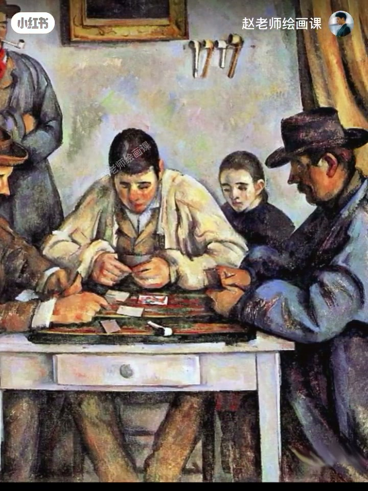
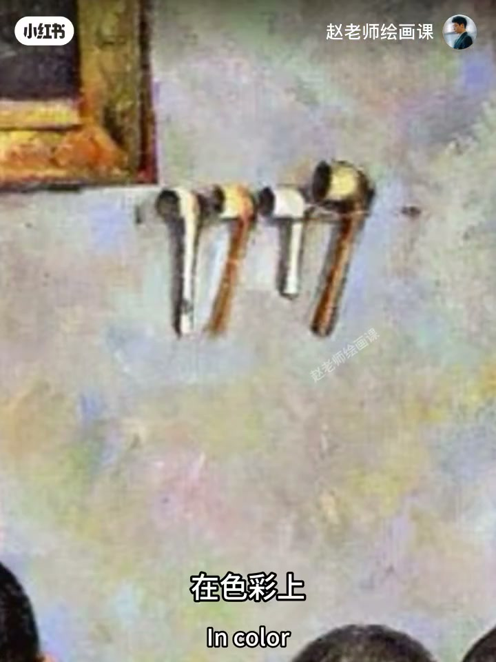
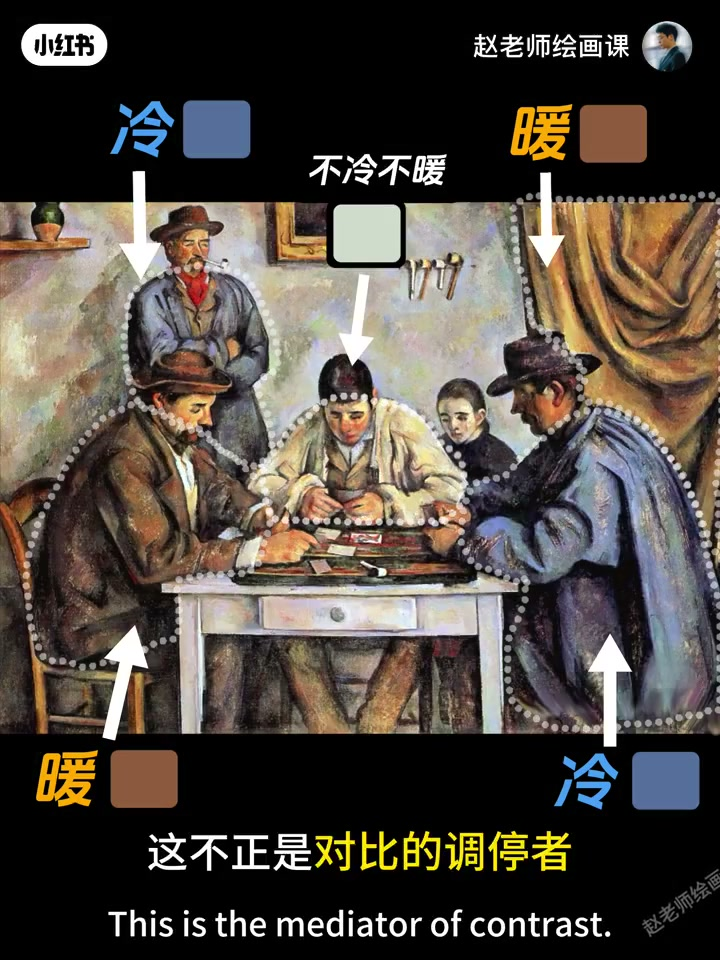
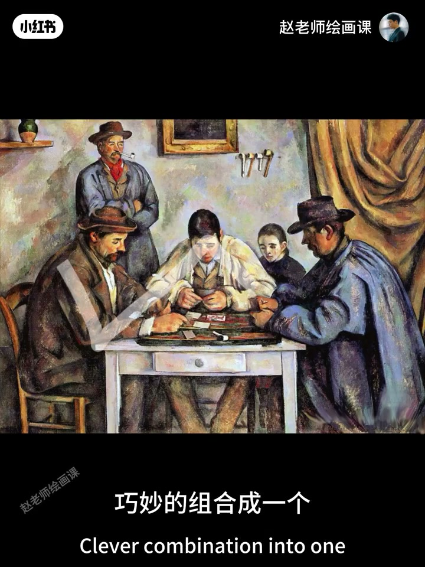
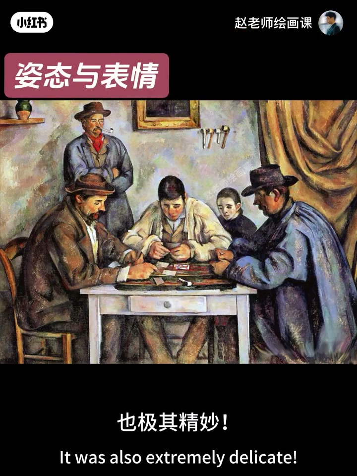

内容要点
对称构图未必呆板。塞尚《玩纸牌者》以白衣人物与墙上挂画为中心对称，均衡肃穆中处处生机：左右棕红与蓝紫上衣冷暖交叉，白衣男孩既不冷不暖，充当对比的调停者——形式本身的魅力正是现代艺术灵魂。再藏L形、W形与平行线动态；左右姿态一松一紧注入输赢焦虑。对称只是框架，微妙对比才是消除呆板的灵魂。
知识结构
交叉冷暖；白衣＝中间人。
双L、多W、三条平行线造张力。
沉稳vs前倾紧抓；对称框架+对比灵魂。
敢用对称：先用中性色或中间形做调停，再在对称框架里埋冷暖、隐藏动态线与姿态差，呆板就会变成张力。
00:00-01:14对称不呆板：冷暖＋调停者
习惯觉得对称呆板不敢用？不然。跟随塞尚走进《玩纸牌者》：白衣人物与墙上挂画为中心对称，整体微妙均衡与肃穆，细看又处处生机。
色彩上：左侧棕红上衣与右侧蓝紫成冷暖对比；左上冷色衣与右侧暖黄窗帘也是冷暖对比。中间白衣男孩既不冷不暖——对比的调停者／中间人。作者感叹塞尚专注形式本身的视觉魅力，正是现代艺术灵魂。00:19／00:33／00:58。



01:14-02:06隐藏动态线：L／W／平行
画面隐藏多种动态线。人群本身成L形；左上罐子、画框、烟斗再到右侧窗帘串联成另一L——不同事物共享相同形状内在联系。两人手臂延伸巧妙组成生动W形，另有两个隐含W。
左上三物体连成直线，画面中央也有隐含直线，加上白色桌面，三条平行线段形成有方向感的排列。隐含动态线在静态场景中造出强烈内在视觉张力。01:37。

02:06-03:15姿态差异：对称框架里的灵魂
人物姿态极其精妙：左侧更放松沉稳，单手拿牌表情清晰，宛如纪念碑式站姿；右侧身体前倾、帽檐压低、表情隐于阴影、双手紧抓牌面，流露对输赢的焦虑；旁观小女孩也伴紧张感。身体语言差异准确传递心理状态，注入情感温度。
伟大之处：既保留对称带来的均衡庄重，更通过色彩对比、动态线条与姿态差异，把潜在机械呆板转化为充满张力的视觉和谐。对称只是框架，微妙对比才是消除呆板的灵魂。构成系统课预告。02:09／02:43。

完整转录（58段）
以下文本由 Whisper medium 模型自动转录，可能存在少量识别误差，已尽可能修正。
你有没有习惯性的觉得
对称式构图呆板无聊而不敢用
岂止不然
今天就让我们跟随赛尚
走进它的玩纸牌者
探寻对称构图隐藏的魔力
画面以白衣人物和墙上挂画为中心对称
整体流露出微妙的均衡与素目感
然而仔细观察画面又处处闪烁着生机与活力
在色彩上
左侧人物的棕红色上衣与右侧蓝紫色上衣形成冷暖对比
同时左上角人物的冷色衣服与右侧暖黄色窗帘也是冷暖对比
很有意思吧
这还没结束
再看中间这位白衣男孩
他的色彩是不是既不冷也不暖
它起了什么作用
思考三秒钟
这不正是对比的调停者或者中间人吗
看到这里我几乎要泪奔了
赛尚真的是如此纯粹的专注于形式本身所带来的视觉魅力
这不正是现代艺术的灵魂所在吗
收拾好情绪我们继续往下看
画面中隐藏了多种动态线
首先人群本身形成一个L形
而左上角的罐子、画框、烟斗再到右侧窗帘也串联成另一个L形
不同事物之间拥有了相同形状的内在联系
其次呢两个人手臂的延伸巧妙地组合成一个生动的W形
猜猜看画面当中还有两个隐含的W
它们在哪
有意思吧
第三左上角三个不同物体连成一条直线
画面中央的位置也有一条隐含的直线
加上白色桌面三条平行线段形成了具有方向感的排列
如此这些隐含的动态线条
在静态的场景中营造出了强烈的内在视觉张力
人物姿态的刻画也极其精妙
左侧人物姿态更显放松沉稳
单手拿牌表情清晰
还有宛如纪念碑式的站姿
右侧人物则身体前倾冒炎压低
表情隐于阴影
双手紧抓排面
流露出对意识的焦虑感
旁边观看的小女孩也伴随着这种紧张感
这种身体语言的差异准确地传递出了不同的心理状态
为画面注入了丰富的情感温度
这就是赛尚的玩纸牌者
这幅画的伟大之处在于
它既保留了对称构图带来的均衡与庄重感
更通过色彩对比、动态线条和姿态差异
将潜在的机械呆板转化为充满张力的视觉和谐
在这幅画中对称只是框架
而那些微妙的对比关系才是消除呆板的灵魂所在
好了,以上就是今天的全部内容
想要掌握对称构图心法
请关注我即将开班的构成系统课
下期见喽,拜拜